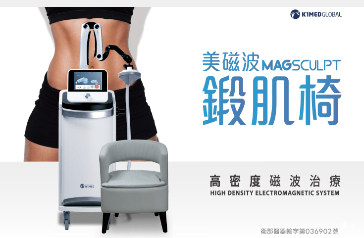
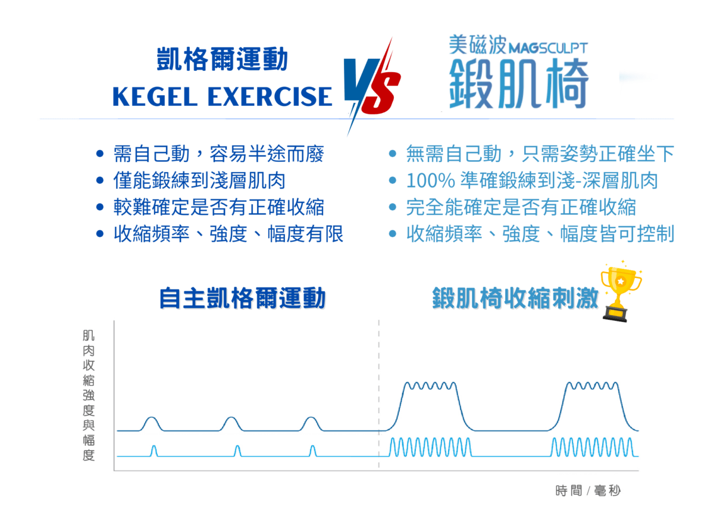

您或您身邊的女性有咳嗽、大笑就漏尿的困擾嗎？或者，出門前總是需要先找好廁所的位置，且在排尿時老是感覺排不乾淨嗎？
除了排尿問題，產後鬆弛也已經開始逐漸影響你的生活品質及夫妻情感了嗎？
現代人生活忙碌壓力大、習慣憋尿，不分男女，久而久之便容易出現頻尿、急尿或解尿困難的問題，甚至可能合併細菌感染。又或者女性在產後出現了諸多泌尿系統相關問題，這些問題實際上都跟「骨盆底肌」的健康有密切的關係。
預防勝於治療，不只女性需要，也不只中老年人需要關心骨盆底肌肉的健康。不分男女，其實都應該更加重視骨盆底肌的保健！
-原理-
高密度磁波治療的原理是透過鍛肌椅獨家技術的「雙感應線圈」產生「超高密度磁場」，並使人體體內產生渦電流引發神經去極化，透過肌肉收縮、放鬆以改善骨盆底與患處循環，達到重建骨盆底肌與制尿系統的力量和耐力的效果。
可恢復神經肌肉的控制能力
可達到骨盆底肌肉強化

-可用於治療的適應症-
目前通過衛服部核准治療的適應症：
緩解疼痛、肌肉刺激、肌肉鬆弛和緩解關節攣縮
簡易自我評估：你有以下困擾嗎？
不分男女，都可能有骨盆底肌引起的各種困擾
女性
產後，或者尚未生產過，只要一咳嗽、打噴嚏、大笑就有漏尿、尿失禁問題
半夜睡覺時經常需起床排尿（夜尿），且影響睡眠
泌尿或生殖系統反覆感染
因私密處相關問題導致身體不適，已影響與伴侶的親密關係和日常生活
男性
因接受前列腺手術，或者缺乏運動、體重過重、長期便秘、經常提取重物、慢性咳嗽等因素，導致慢性骨盆腔疼痛、大小便失禁、排便困難，或無法控制肛門排氣
頻尿、急尿，經常來不及到小便斗就忍不住尿出來
偶有早洩問題或因為壓力因素而影響性功能表現
因相關泌尿系統問題持續發生，已影響與伴侶的親密關係和日常生活
──這些問題，都和「骨盆底肌」的健康息息相關！
-你的私密問題，泌密會客室為你把關-
津久診所 x 泌密會客室在治療前會先全面評估患者是否有進行高密度磁波治療的必要性。以尿失禁為例，醫師會先為您判斷您的「尿失禁」是哪一種類型？
「尿失禁」可分為：應力型（又稱壓力型）、急迫型、混合性
應力型──因老化、懷孕、肥胖使骨盆底肌過度拉扯而鬆弛 導致咳嗽、打噴嚏、大笑、提重物時會不自主滲漏尿液
急迫型──因神經受損無法控制而引起肌肉非自主收縮 導致尿急、頻尿、夜尿、膀胱炎、膀胱過動症等情形
混合性──兼具了上述兩種情況 尿失禁中約有 50%-60% 屬於此類型
治療前
津久診所的醫師會先於看診時進行初步評估，若有需要，將會進行進一步檢查。 確認需要使用鍛肌椅治療後，會請患者填寫同意書並進行相關注意事項說明。 療程前，需解空膀胱，並移除身上所有金屬物品。
治療中
津久診所的醫師會先教導正確的使用方法，包含：
確認身上無金屬物品，讓患者正確坐下
擺正骨盆以確定治療位置
確認無誤後，開始療程
治療後
治療後，由醫師親自在 Line 上持續追蹤情況，並全面講解後續相關所需衛教知識。兩位醫師會輪流親自回覆訊息，若您有問題，都能即時獲得醫師本人的解答，安心又放心！
-高密度磁波治療(鍛肌椅)治療優點-
鍛肌椅獨家的高密度電磁能技術（HDTME）：透過獨家技術的「雙感應線圈」產生「超高密度磁場」，並使人體內產生「渦電流」引發神經去極化，可透過肌肉收縮放鬆改善骨盆底與患處循環。
一次療程 30 分鐘，相當於做了上萬次的凱格爾運動，同時刺激淺層/深層肌肉，達到 100% 刺激盆底肌的效果。
整個治療過程中可以一邊進行療程一邊使用手機、閱讀、追劇，甚至聊天，讓你在無痛且無壓力的過程中逐步重建自己的肌力和骨盆底肌有關的泌尿功能。
高強度3T
非侵入式
治療時間短
隔空治療
高滲透
深度10cm
高聚焦深度穿透，深度足，聚焦全骨盆底肌
透過高密度磁波治療可有效刺激骨盆底深層肌肉，能恢復神經肌肉的控制能力，強化骨盆底肌群
透過自體鍛練找回原有能力，從根本改善功能
免開刀、免吃藥、免住院，透過肌肉自體收縮來重建骨盆底肌與制尿系統的力量與耐力
全程無需手術、不需住院，更無藥物帶來的副作用
不想靠藥物？想真正處理根本上的問題？那你更應該選擇高密度磁波治療！
-為什麼要訓練骨盆底肌？-
骨盆底肌為支撐骨盆底的肌肉群，男女都有，主要功能為支撐器官（膀胱、子宮、直腸等臟器）、抵抗腹壓、排尿控制及生殖維護。承受著各種運動所增加的腹部壓力，同時也是掌控排尿、排便的重要角色！
骨盆底肌和身體上的其它肌肉一樣，都需要鍛練！當我們因為年齡、肥胖、缺乏運動或者生產等因素缺少鍛練，就有可能導致該肌群機能退化，進而導致相關的症狀出現。這個時候，我們就要考慮積極治療了。
-誰需要特別訓練骨盆底肌？-
一般族群
- 肥胖族群
- 長期便祕
- 年紀增長
- 長期搬重物
產後／病症確診者
- 產後媽媽
- 頻尿／漏尿
- 更年期
- 輕中度尿失禁／盆腔器官脫垂
- 親密關係不協調
- 手術後骨盆底障礙
-凱格爾運動 VS 鍛肌椅-

-治療過程如何進行？-
每次僅需 30 分鐘，震波可達 10cm 深度，無痛、舒適，無需特別準備
全療程約 4 至 6 次治療，療程完成後即可享受長期顯著改善效果
-選擇津久診所做高密度磁波治療(鍛肌椅)的理由？-
真正醫學中心級主治醫師替您把關，全程守護您的健康
前醫學中心主治、泌尿專科陳偉傑醫師、羅詩修醫師替您量身打造醫療計畫，絕對專業，能對症下藥解決問題，讓您免於擔憂
嚴選使用最新引進 K1MED MAGSCULPT「美磁波鍛肌椅」器械
本器械為 2024 年最新型機種 韓國原裝進口 – 衛署醫器輸字第036902號
無術後恢復時間，安全性高，無副作用
津久診所醫師的方法不僅有效，還能讓您免除傳統治療所帶來的一切可能的風險
快速、便利與顧及隱私
可當日預約，當日治療，治療過程快捷；一人一間治療室，絕對尊重患者隱私
立即行動，讓您擁抱自信人生！ 無需妥協健康，也無需讓不便阻礙您的人生享受。 讓津久診所的高密度磁波治療幫助您，重獲自主、自由與滿足的生活！
台北女性泌尿科門診推薦！專業雙主治醫師為你把關
泌密會客室 – 陳偉傑醫師 X 羅詩修醫師
陳偉傑 醫師
『創造非凡精彩人生』
健康，其實是一個動詞，需要通過努力與踏實砌成的動詞，很多人會說奮鬥不一定會成功，但我們要說：「不奮鬥，絕對失敗」只有奮鬥過的人生，才能不留遺憾、才能更加精彩也才能至善至美。

羅詩修 醫師
『捍衛兩性泌密健康』
泌密健康，就四個字，但它並不會讓你一輩子都過得那麼容易，轉機就在於你堅強的那一刻，你的人生，會因為你的泌密健康，過得更性福美滿，也過得更加精彩

【本資訊無法取代醫師親自關心您；若有副作用等使用問題，請洽醫師諮詢。】
-常見問題-
Q1：在進行高密度磁波治療的過程中會感覺到疼痛嗎？
A：不會有疼痛感，一般求診者會明顯感覺到盆底肌肉的收縮，且僅有治療部位會有麻麻的電流感。
所謂的「電流感」如同一般手麻腳麻的感覺，不會有不適感，甚至有的人沒有特別感受。依據每個人的身心狀況與盆底肌的強弱，會有個體上不同的治療感受，皆為正常現象。
若感到稍有不適，經過稍加休息後即會解除。
Q2：療程後能維持多久？
A：臨床研究顯示，治療後 5-6 個月仍有 75% 的患者維持良好的盆底肌效果。 若您是高風險族群，或已有症狀發生，建議持續進行高密度磁波治療作為日常預防保養，或經常性地自主實行凱格爾運動，讓盆底肌肉得以維持機能、時常處在健康狀態。
Q3：做多久會有效果？
A：每次療程 30 分鐘，每周 2 次，間隔期間為 2-5 天。
建議做 4-6 次且最好在 3 周內完成整個療程，每次鍛練之間勿中斷或間隔太久。
有些患者可能會在做 1-2 次療程後就能明顯感受到盆底肌強化後的差異，於是就自行決定停止治療；然而這樣容易影響長期治療效果，故建議還是要持續將整套療程做完。
Q4：治療前需做好什麼準備？
A：著寬鬆衣褲進行治療即可。此外，需移除治療部位周邊金屬配件，手機亦不可直接靠近儀器。
Q5：高密度磁波治療與一般盆底肌訓練球有何差別？
A：高密度磁波治療(鍛肌椅)為非侵入性且無須更衣的療程，其獨家的高密度電磁能技術（HDTME）可以 100% 精準刺激淺層-深層肌肉，適合所有男女性族群。
盆底肌訓練球為侵入性且需脫衣褲的產品，還須自行將訓練球塞進陰道內，讓盆底肌感覺後產生自主收縮，練習不易且容易造成陰道損傷，若消毒不慎更有感染風險，不僅安全性尚有爭議，效果也難以評估。
Q6：高密度磁波治療是否會有所謂的電磁波影響身體？
A：高密度磁波治療所使用高密度電磁能技術（HDTME）僅為引發骨盆底肌的肌肉收縮使用，不具放射線，在治療過程中其周圍所產生的電磁波甚至遠低於生活環境中的其它電磁波。此外，本產品通過衛署醫器輸字第 036902 號認證，安全無虞。
Q7：高密度磁波治療的療程需要自費嗎？
A：此療程為自費項目，健保無給付。
【本網頁以介紹醫療新知與衛教宣導為目的，非為廣告內容，並依據衛部醫器輸字第036902號仿單說明。 詳細療程效果與方式等資訊，需以醫師親自說明為準。】
-醫師服務地點-
津久診所 台北市中山區松江路276號3樓
-如何抵達-
捷運 橘線(中和新蘆線)行天宮站的4號出口，出站後右轉步行40秒就可以看到津久診所的大招牌，搭電梯上3樓。
開車 1.台灣聯通停車場-將捷二場(停車塔，眾多信用卡可停車折抵): 台北市中山區松江路336號 2.聯邦佳佳大樓停車場(地下平面停車場): 台北市中山區松江路235巷22號
坐公車 1.捷運行天宮站(松江路) 109,1550A,203,214, 214直,222,26,277,279,280,280直,41,49,5,5203A,612,676,9069,9069A,945, 松江新生幹線,林口-台北長庚醫院,紅57 2. 松江新村 214, 214直,286副,49,9069,9069A,945 3. 民權松江路口 1841,1841A,1842,1842A,225,225區,5250,5250A,617,617副,63,685,688,801,803,內科通勤專車18,敦化幹線，民權幹線,紅29,紅31